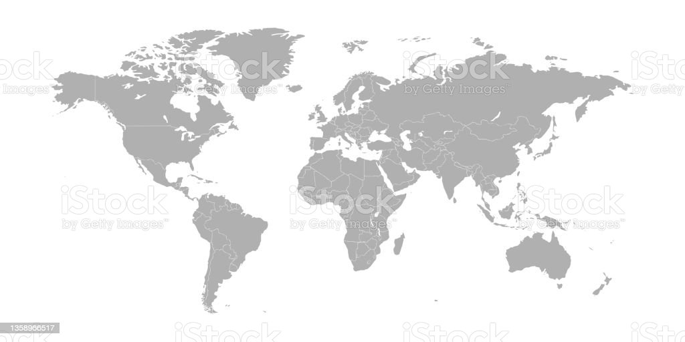

Interactive map: You can create an image map to define clickable regions on an image, such as a map, where each region corresponds to a specific location or action.
<img src="world-map.jpg" alt="World Map" usemap="#map">
<map name="map">
<area shape="rect" coords="0,0,100,100" href="north-america.html" alt="North America">
<area shape="rect" coords="100,0,200,100" href="europe.html" alt="Europe">
</map>

Custom navigation: You can use an image map to create a custom navigation menu with clickable regions corresponding to different sections of a webpage.
<img src="menu.png" alt="Navigation Menu" usemap="#menu">
<map name="menu">
<area shape="rect" coords="0,0,100,50" href="home.html" alt="Home">
<area shape="rect" coords="100,0,200,50" href="about.html" alt="About">
</map>